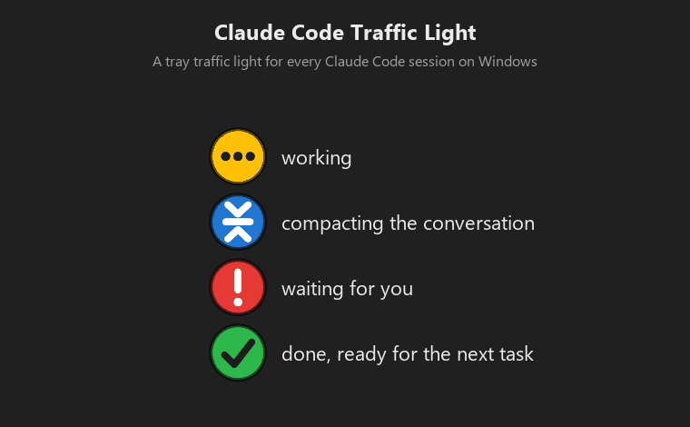
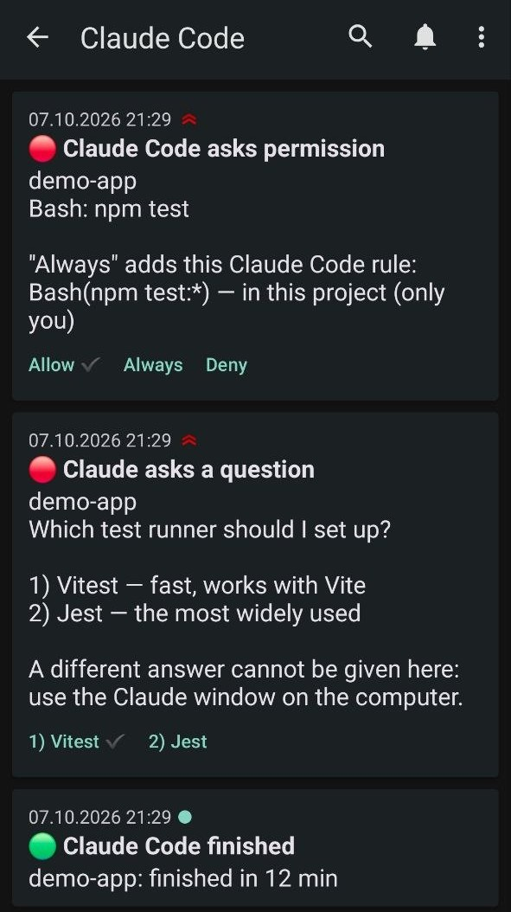
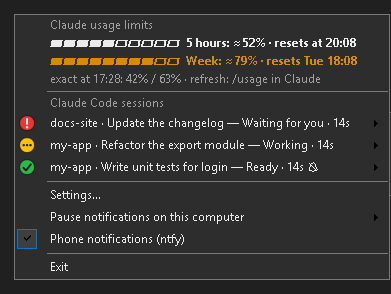

Claude Code Traffic Light
A small Windows tray app that shows every Claude Code session at a glance: which one is working, which one waits for you, which one is done. Answer its permission prompts without switching windows, and get a push on your phone only when you are away.
Free and open source (GPL-3.0). One portable .exe, no installer, no administrator rights, no telemetry. Beta 0.9.

What the colours mean
- working
- waiting for its own build or tests
- compacting the conversation
- waiting for you
- done, ready for the next task
With several sessions open, the tray icon shows the most urgent state; the tray menu lists every session, named after its chat.
Features
All sessions, one icon
Console and VS Code sessions alike. Bring a session's window to the front from the menu, mute one session, or pause everything for an hour.
Answer without switching
A panel near the tray shows the permission prompt or the question with its answer options. Click, or press Win+Alt+C and answer from the keyboard.
Phone, only when away
Pushes through ntfy (ntfy.sh or your own server) only when you did not react on the computer or the screen is locked. Answering prompts from the phone is optional.
No false "done"
When Claude only stops to wait for its own background task, such as a build or tests, the lamp shows clock hands for as long as the task runs, and nothing is reported as finished. A wait of half an hour gets one notice, in case the task is stuck.
Usage limits at a glance
The 5-hour and weekly limits with their reset times, at the top of the menu, in the icon tooltip and in every push. Exact after /usage, estimated in between from your own sessions; nothing is asked of Anthropic.
Out of Claude's way
Driven by Claude Code hooks that exit within milliseconds. If the app is not running, the hooks simply do nothing.
Fits your Windows
7 languages, light, dark and system theme, high contrast, display scaling and several monitors.
On your phone

Pushes arrive in the free ntfy app (Android and iPhone), from ntfy.sh or your own server.
- Permission prompts come with Allow and Deny, and with Always when Claude Code offers a rule so it does not ask again; the push says what that rule allows.
- Questions with answer options get a button for each of the first three answers.
- Finished tasks are reported only when they ran long enough for you to look away.
- Answer on the computer first, and the phone is told the buttons no longer work.
Answering from the phone is off until you turn it on. The topic name is random and secret, and buttons work once, only for the request still waiting.
Usage limits

How much of Claude's 5-hour and weekly limits you have used, and when each resets, without typing /usage every time.
- Exact right after
/usage: Claude Code keeps those figures on your computer, and the app reads them. - Estimated in between (marked ≈) from what your sessions used since, each model weighed by your own past figures; every
/usageputs it right again. - The same figures on the second line of the icon tooltip and at the end of every push; optionally a notice, here and on the phone, every N percent, when a limit runs out and when it is back.
The app never contacts Anthropic and never touches your Claude sign-in. Use on other devices shows up at the next /usage.
Get started
1. Download ClaudeCodeTrafficLight.exe from the releases page and run it.
2. Answer Yes to "Connect to Claude Code": the app adds its hooks to ~/.claude/settings.json and keeps a backup of the original.
3. Start Claude Code as usual.
Requires Windows 10 or 11 (the .NET Framework it needs is part of Windows). The file is not code-signed, so Windows SmartScreen may warn on the first start: More info → Run anyway. Each release is built by GitHub Actions from the tagged source, reproducibly, and lists its SHA-256 checksum in SHA256SUMS.txt.
Privacy
The program collects nothing and sends nothing about you: no telemetry, no update checks. It uses the network only if you set up phone notifications, and then only to the ntfy server you chose. For the usage limits it reads the session transcripts and the figures Claude Code keeps on your computer; it never contacts Anthropic and never touches your Claude sign-in. This page has no counters or trackers either.